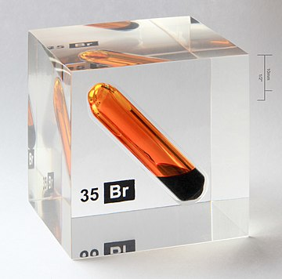

Brom (Br, łac. bromum) - pierwiastek chemiczny o liczbie atomowej 35, niemetal z grupy fluorowców. To jeden z dwóch pierwiastków, które w warunkach normalnych jest cieczą.
Występuje głównie w postaci jonów lub soli jonowych.
Brom to niemetal, ciecz, ma brunatnoczerwony kolor, przykry zapach, jest aktywny chemicznie, łatwo się ulatnia.
Zastosowanie bromu w przemyśle, nauce, technice i medycynie jest następujące:
leki uspakajające, synteza związków organicznych, środek dezynfekujący w łaźniach, dodatek do sztucznych tekstyliów, obniżający ich palność, emulgatory.
Działa drażniąco na błony śluzowe.
Woda bromowa to ciecz uzyskana przez rozpuszczenie bromu w wodzie o utleniających właściwościach.

Brom (ok. 2 g, czystość 99,8%) w szklanej ampułce zatopionej w szkle akrylowym.